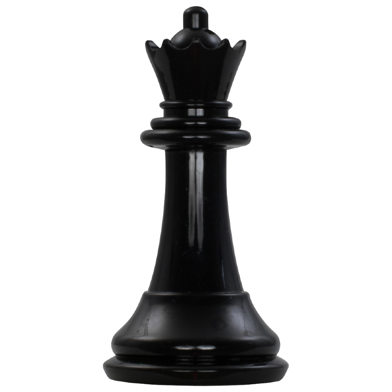

A dama é a peça mais poderosa do xadrez, combinando a mobilidade da torre e do bispo. Ela pode se mover em qualquer direção — horizontal, vertical e diagonal — e percorrer quantas casas quiser, desde que não haja outra peça bloqueando seu caminho. Essa liberdade de movimento faz com que a dama seja extremamente versátil, podendo atacar e defender com grande eficiência. Por ser tão forte, a dama desempenha um papel fundamental nas estratégias do jogo. Ela é capaz de controlar grandes áreas do tabuleiro, pressionar o rei adversário e criar ameaças constantes. No entanto, justamente por seu alto valor, deve ser usada com cuidado: perder a dama pode colocar o jogador em grande desvantagem. No início da partida, não é recomendado desenvolver a dama muito cedo, pois ela pode ser facilmente atacada pelas peças menores do adversário. Já no meio e no final do jogo, ela se torna uma peça decisiva, participando de ataques diretos e combinações que podem levar ao xeque-mate. Em resumo, a dama é a peça mais forte do xadrez em termos de movimentação e ataque, sendo essencial tanto na ofensiva quanto na defesa. Saber utilizá-la com inteligência pode fazer toda a diferença no resultado da partida.